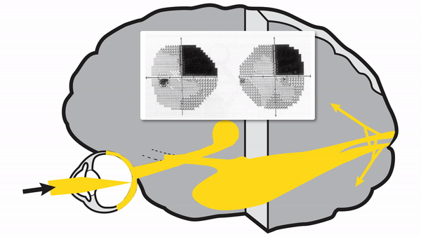

( of )
Correct: 0
Incorrect: 0
An 80 year old man complains of reduced vision in “my right eye” that started 3 days ago. An optometric examination 3 months ago had been normal. Examination now is normal apart from these visual field defects.
Where is the lesion?
Correct!
Although it is true that a lesion of the inferior portion of the optic radiations would cause a homonymous hemianopia that preferentially affects the superior field, it would not respect the horizontal meridian because the superior and inferior optic radiation axons do not become distinct until they reach the calcarine fissure in the occipital lobe. By the way, you should not apply the term “quadrantanopia” unless the defects are homonymous hemianopias with borders aligned to vertical and horizontal meridians. True quadrantanopias almost always reflect infarctions in the domain of the posterior cerebral artery, which serves the upper and lower calcarine banks with separate branches. In this patient, MRI revealed restricted diffusion in the lower bank, indicating fresh infarction; the lower branch of the posterior cerebral artery must have been occluded. Embolism is always a consideration, with the heart as a source.

This is a right superior homonymous quadrantanopia—a defect pattern that is exquisitely localizing—to the left inferior visual cortex or its adjacent incoming axons. Notice three features of these defects: 1) they are on the same side of visual space; 2) they “respect” the vertical meridian; and 3) they “respect” the horizontal meridian. Respect for both meridians can arise only from lesions limited to the upper or lower banks of the calcarine fissure, a brain groove that separates the superior from the inferior primary visual cortex. In this patient, the lesion lies in the lower bank
Incorrect
Incorrect
Incorrect